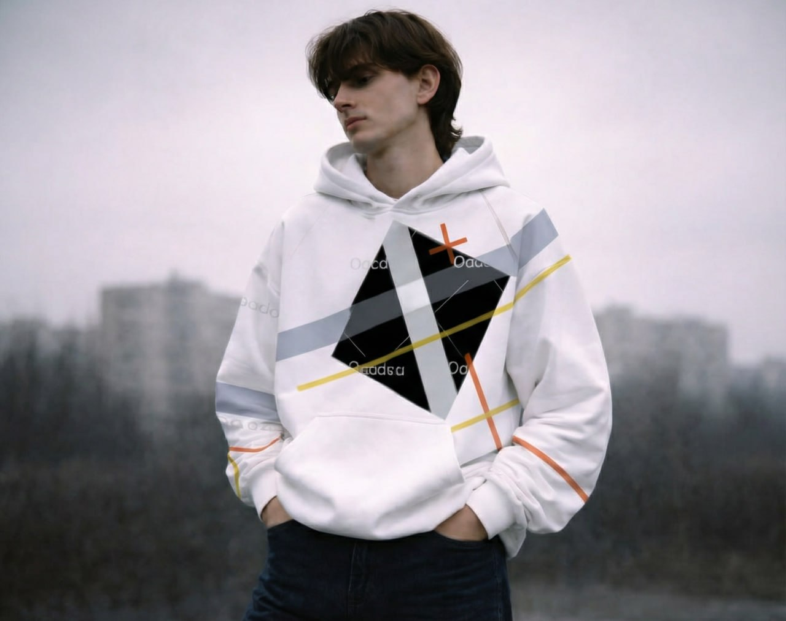

Oversized
65 €
PersonnaliserCollection SS25 — Vinko Studio
Un sweatshirt à capuche inspiré de la rigueur géométrique du constructivisme. Chaque bande est un trait, chaque angle une composition. Personnalisez le vôtre.

Vinko naît d'une fascination pour le Bauhaus et le constructivisme soviétique. Le Zerkalo — miroir en russe — reflète cette tension entre la rigueur mathématique des formes et la liberté de les réinterpréter. Chaque vêtement est une composition à part entière.
Le produit — Trois coupes
La collection Zerkalo puise dans l'œuvre de Laszlo Moholy-Nagy, pionnier du Bauhaus. Ses compositions de lignes, cercles et plans de couleur deviennent ici un langage vestimentaire. Une géométrie portée, vivante.
En savoir plusExplorez la galerie des œuvres de Laszlo Moholy-Nagy (1918–1946), source d'inspiration directe de la collection Zerkalo.